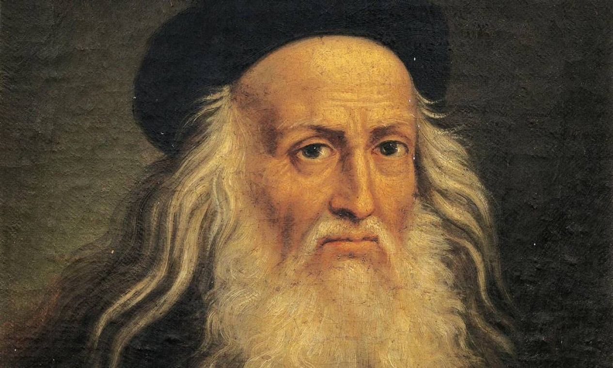
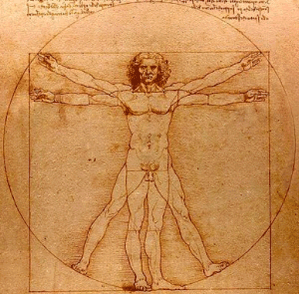

Leonardo da Vinci
Leonardo da Vinci foi um dos maiores gênios do Renascimento, destacando-se como pintor, inventor, cientista, engenheiro, anatomista, escultor e arquiteto. Sua curiosidade e criatividade extraordinárias o tornaram um símbolo da busca pelo conhecimento e da união entre arte e ciência.
Principais Obras
- Mona Lisa
- A Última Ceia
- Homem Vitruviano 
- Virgem das Rochas
- Dama com Arminho

Retrato enigmático de uma mulher com sorriso sutil, considerada uma das obras mais famosas do mundo.

Representa o momento em que Jesus anuncia que será traído por um dos discípulos.
Estudo das proporções ideais do corpo humano, unindo arte e ciência.

Obra religiosa com grande domínio do chiaroscuro (luz e sombra).

Retrato de Cecília Gallerani segurando um arminho, símbolo de pureza e elegância.